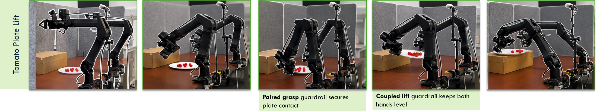

Task Descriptions
Tomato Plate Transfer
The robot must use both grippers to grasp and transport a plate containing tomatoes from tabletop to an elevated surface. Successful execution requires maintaining plate stability throughout the lift and placement so that no tomatoes are spilled.

Note: visual outlines in the images are added only for readability; the underlying robot observations are otherwise unedited.
GLIDE-Teleoperation
Tomato Plate Transfer
Raw teleoperation treats the two arms independently. During loaded transport, controller mismatch can create height differences between grippers, tilt the plate, and spill tomatoes.
GLIDE treats both grippers as a coupled tray: it keep the plate level, preserve grasp width, restrain wrist tilt, and coordinates gripper open/close.
Case Study (GLIDE keeps grippers at matching heights to avoid side-to-side tilt)
GLIDE Guardrail Generation
I have a bimanual teleoperation script at <script_name>, where the readings of two controllers from VR headset are mapped to the robot commands through inverse kinematics. I am now collecting data for a new task, that bimanually picking up and lifting a plate full of cherry tomatoes onto a box. Please identify the potential failure cases in the teleoperation process, design constraints and apply the filter that will help to make the human teleoperation easier.
class PlateLiftTeleopFilter:
# Task-space filter inserted between raw VR target poses and IK.
def _filter_carry_midpoint(self, raw_mid, prev_mid):
# Move the shared plate center. XY can move faster for
# transport, while Z is slower to avoid drops and spills.
filtered = prev_mid + pos_alpha * (raw_mid - prev_mid)
step = filtered - prev_mid
step[:2] = clamp_vector_norm(step[:2], carry_max_xy_speed * dt)
step[2] = clip(step[2], -carry_max_z_speed * dt, carry_max_z_speed * dt)
step_delta = clamp_accel(step - self.prev_mid_step)
self.prev_mid_step = step
return prev_mid + step
def filter_pair(self, left_target_pose, right_target_pose, stabilize=False):
if not stabilize:
return filter_single(left), filter_single(right)
self._ensure_carry_reference(left_target_pose, right_target_pose)
raw_mid = 0.5 * (raw_left_pos + raw_right_pos)
raw_mid[2] = max(raw_mid[2], init_mid[2] - carry_down_margin)
half_delta = carry_differential_gain * (raw_half_sep - init_half_sep)
half_delta[2] = clip(
half_delta[2], -0.5 * carry_max_height_diff, 0.5 * carry_max_height_diff)
filtered_mid = self._filter_carry_midpoint(raw_mid, prev_mid)
left_rot = self._filter_rotation(carry_left_rot, left_target_rot, carry_orientation_weight)
right_rot = self._filter_rotation(carry_right_rot, right_target_rot, carry_orientation_weight)
return left_filtered, right_filtered
def should_stabilize_plate(left_arm, right_arm, left_state, right_state, args):
# Enter paired carry when both triggers are pressed or both grippers close.
return both_triggers or (left_closed and right_closed)
def toggle_plate_grippers_from_triggers(left_arm, right_arm, args):
target_label = "open" if min(left_closed, right_closed) >= reopen_threshold else "close"
set_gripper_target_label(left_arm, target_label)
set_gripper_target_label(right_arm, target_label)